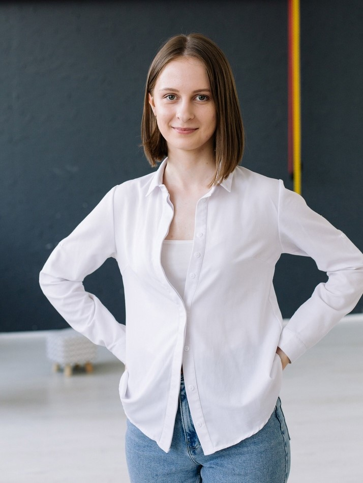

Терлецкая Маргарита FR-97
Обо мне
Мне 20 лет. Живу в городе Санкт-Петербург, сама родом из Челябинска.
Еще со школы мечтала стать фронтенд-разработчиком, потому что, как только я видела плохие сайты, мне становилось грустно.
Образование
На данный момент получаю высшее образование в Санкт-Петербургском Горном университете.
Специальность - управление в технических системах, 3 курс.
Опыт работы
Имела только опыт подработки в разных сферах деятельности.
Последняя была в Горном университете.
Хобби
Люблю читать книги и смотреть ютуб, влюбилась в катание на горных лыжах.
Не представляю своей жизни без прослушивания музыки.
Как я становилась разработчиком
- 22.12.2021 Поняла, что больше не стоит откладывать обучение.
- 30.12.2021 Покупка курса по фронтенд-разработке.
- 17.01.2022 Начало обучения.
- 22.01.2022 Сделала сайт-визитку.